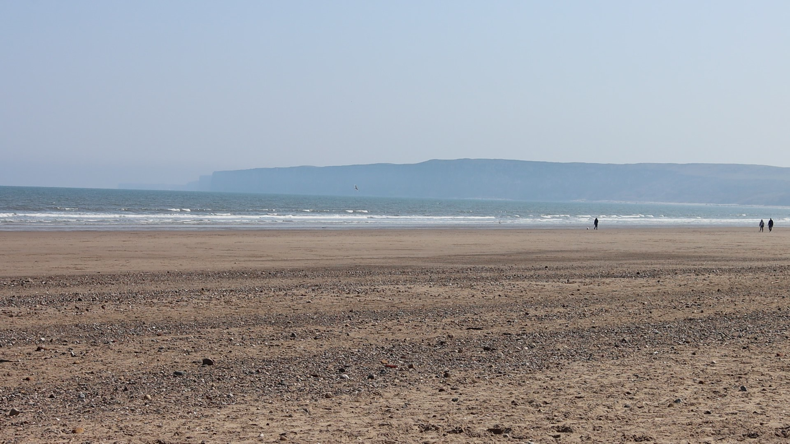
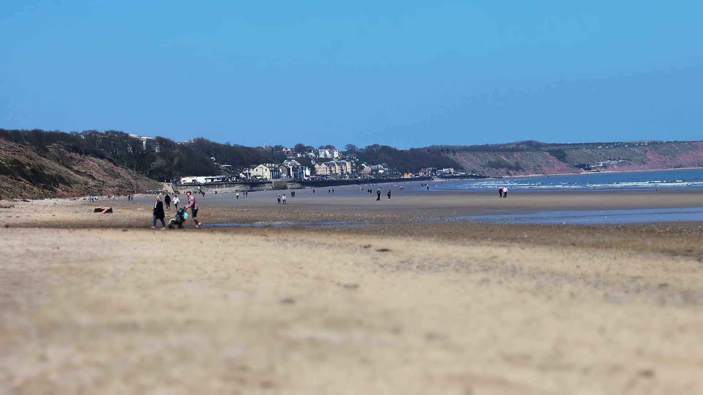
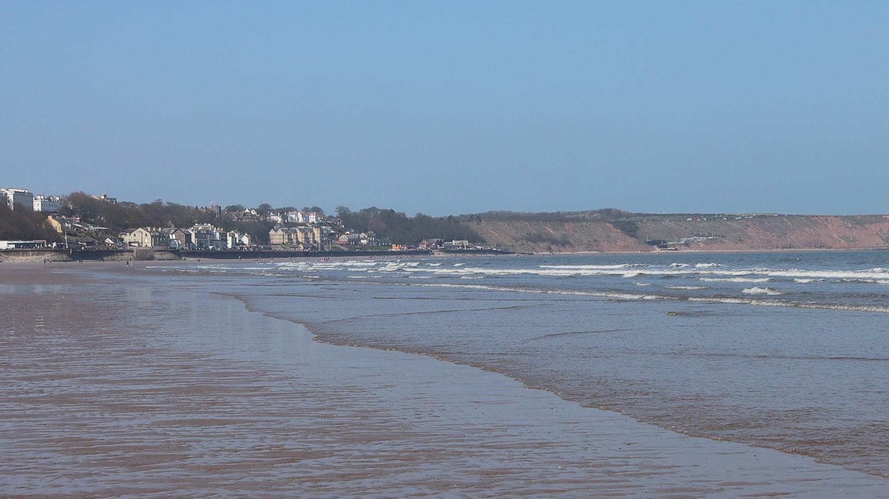
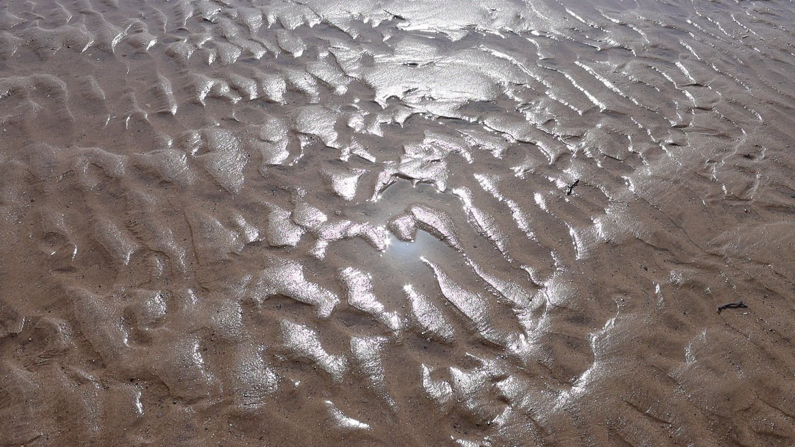
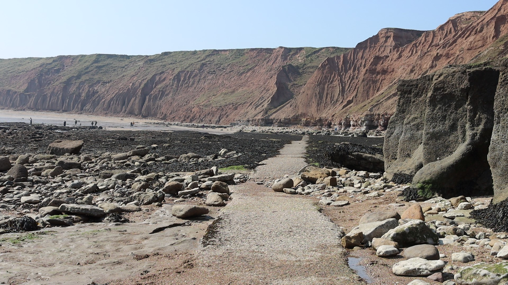
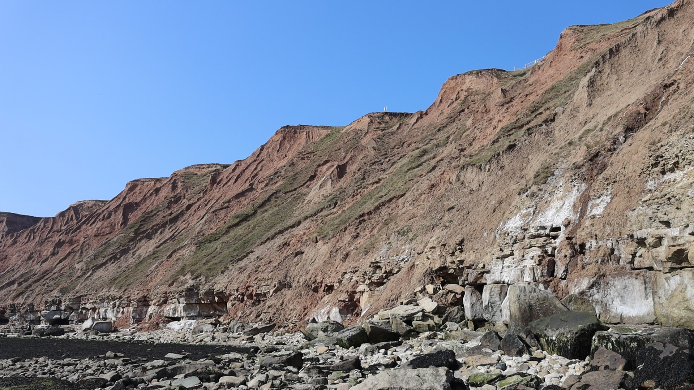

Looking onto the sea
Photo from Filey beach looking onto the Sea.

Looking towards Filey
Photo from same position on FIley beach as the first slide, looking towards Filey itself.

Looking towards Filey, this time from the tide edge
Photo again looking towards Filey but this time from the tide edge.

Attempt at an arty shot of the beach
Customary photo of the beach with the light shimmering off the wet sand.

Concrete track running along Filey beach
Photo of a concrete track that runs the length of the northern part of Filey beach.

Cliff edge and beach along the Northern most part of Filey beach
Photo showing the cliff edge and part of the beach again on the northern part of Filey beach.